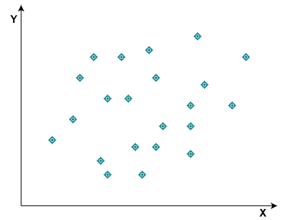

So what exactly is linear regression?
Linear regression involves finding the best fit line through the data points

The line is what is used for prediction.
In this lesson we will try and get a high level intuitive understanding of how linear regression works.
Regression analysis is often used to model causes and effects, the cause being the independent variable and can also be referred to as the explanatory/predictor variable (X), the effect is the dependent variable i.e the variable that is dependent on the cause.
Simple linear regression is a regression where we have exactly 1 X variable. Simple linear regression is easy to understand because the data points used for the regression analysis can be plotted on a two dimensional plane like in the diagram below

Linear regression involves finding the best fit line through the data points
The line is what is used for prediction.
The regression line also known as best fit line is that line which minimizes the variance of the residuals (Mean Square Error). The residuals in this case are the difference between the actual values of the dependent variable and the fitted values of the dependent variable.
When there are more than one explanatory variable the regression becomes Multiple Regression. The same objective of the simple linear regression applies to the multiple regression, i.e To minimize the variance of the residuals.
Now after performing regression analysis (whether simple linear regression or multiple regression) we need a way to be able to evaluate our result, one of the ways we can evaluate the result is by using the \(R^{2}\) metric
\(R^{2}\) = ESS / TSS
where
ESS stands for EXPLAINED SUM OF SQUARES (variance of the fitted values)
TSS stands for TOTAL SUM OF SQUARES (variance of the actual values)
The \(R^{2}\) metric measures the percentage of total variance explained by the regression. The higher the \(R^{2}\) the better the quality of the regression analysis.
In multiple regression the \(R^{2}\) metric is not used directly, we make use of the adjusted \(R^{2}\), and this is because in multiple regression there may be variables which are not relevant. The adjusted \(R^{2}\) adds an additional penalty to handle variables that are not really relevant in the analysis.
In summary, the best fit regression line is the line that produces the best \(R^{2}\)
Another way to evaluate the result of a regression analysis is by using the RMSE metric. The root mean square error is a preferred evaluation choice for some people, it can be obtained by taking the root of the Mean Square Error.
Now that we know what regression analysis is and how to evaluate the result let us use an example to gain a practical knowledge of what we have discussed.
For this example we are going to build the linear regression model first using base R and then using tidymodels..
We will be making use of the Real Estate Dataset from kaggle for this example. Our aim is to predict house price given some features like date of purchase, house age, number of convinience stores ,location, and distance to nearest mrt station.
Before proceeding let us make some few assumptions about the dataset since we didn’t get much information about the dataset from kaggle.
Bellow are the assumptions;
1. The house price of unit area is in thousands of dollars
2. The distance to nearest mrt station is distance in miles
Now let us load all the packages that we will need for this example
require(tidyverse)
require(tidymodels)
require(GGally)real_estate <- read_csv("https://raw.githubusercontent.com/twirelex/dataset/master/real_estate.csv") %>% janitor::clean_names()## Parsed with column specification:
## cols(
## No = col_double(),
## `X1 transaction date` = col_double(),
## `X2 house age` = col_double(),
## `X3 distance to the nearest MRT station` = col_double(),
## `X4 number of convenience stores` = col_double(),
## `X5 latitude` = col_double(),
## `X6 longitude` = col_double(),
## `Y house price of unit area` = col_double()
## )dim(real_estate)## [1] 414 8glimpse(real_estate)## Rows: 414
## Columns: 8
## $ no <dbl> 1, 2, 3, 4, 5, 6, 7, 8, 9, 1...
## $ x1_transaction_date <dbl> 2012.917, 2012.917, 2013.583...
## $ x2_house_age <dbl> 32.0, 19.5, 13.3, 13.3, 5.0,...
## $ x3_distance_to_the_nearest_mrt_station <dbl> 84.87882, 306.59470, 561.984...
## $ x4_number_of_convenience_stores <dbl> 10, 9, 5, 5, 5, 3, 7, 6, 1, ...
## $ x5_latitude <dbl> 24.98298, 24.98034, 24.98746...
## $ x6_longitude <dbl> 121.5402, 121.5395, 121.5439...
## $ y_house_price_of_unit_area <dbl> 37.9, 42.2, 47.3, 54.8, 43.1...remove the no column as it is only an identifier and doesn’t really need to be part of the variables
real_estate <- real_estate %>%
select(-no)knitr::kable(head(real_estate))| x1_transaction_date | x2_house_age | x3_distance_to_the_nearest_mrt_station | x4_number_of_convenience_stores | x5_latitude | x6_longitude | y_house_price_of_unit_area |
|---|---|---|---|---|---|---|
| 2012.917 | 32.0 | 84.87882 | 10 | 24.98298 | 121.5402 | 37.9 |
| 2012.917 | 19.5 | 306.59470 | 9 | 24.98034 | 121.5395 | 42.2 |
| 2013.583 | 13.3 | 561.98450 | 5 | 24.98746 | 121.5439 | 47.3 |
| 2013.500 | 13.3 | 561.98450 | 5 | 24.98746 | 121.5439 | 54.8 |
| 2012.833 | 5.0 | 390.56840 | 5 | 24.97937 | 121.5425 | 43.1 |
| 2012.667 | 7.1 | 2175.03000 | 3 | 24.96305 | 121.5125 | 32.1 |
summary(real_estate)## x1_transaction_date x2_house_age x3_distance_to_the_nearest_mrt_station
## Min. :2013 Min. : 0.000 Min. : 23.38
## 1st Qu.:2013 1st Qu.: 9.025 1st Qu.: 289.32
## Median :2013 Median :16.100 Median : 492.23
## Mean :2013 Mean :17.713 Mean :1083.89
## 3rd Qu.:2013 3rd Qu.:28.150 3rd Qu.:1454.28
## Max. :2014 Max. :43.800 Max. :6488.02
## x4_number_of_convenience_stores x5_latitude x6_longitude
## Min. : 0.000 Min. :24.93 Min. :121.5
## 1st Qu.: 1.000 1st Qu.:24.96 1st Qu.:121.5
## Median : 4.000 Median :24.97 Median :121.5
## Mean : 4.094 Mean :24.97 Mean :121.5
## 3rd Qu.: 6.000 3rd Qu.:24.98 3rd Qu.:121.5
## Max. :10.000 Max. :25.01 Max. :121.6
## y_house_price_of_unit_area
## Min. : 7.60
## 1st Qu.: 27.70
## Median : 38.45
## Mean : 37.98
## 3rd Qu.: 46.60
## Max. :117.50Looking at the summary statistics above we can see that variables like distance_to_the_nearest_mrt_station has a mean value that is very high when compared to other variables like the number_of_convinience_stores and house_age, these large values will have effect on our model if used as is, so we will have to standardize the variables in the pre-processing stage before building our model so that all the variables can have values that will not cause bias in our model.
ggpairs(real_estate, upper = NULL)
These are some of the things that can be observed from the plot above
* Most of the variables are not normally distributed
* The distance_to_the_nearest_mrt_station has a negative correlation with the house price
* The transaction date variable doesn’t really have effect on the house price
* The house age variable has a negative correlation with the house price
* The number_of_convinience_stores has a fairly positive correlation with the house price
The only pre-processing we will do before building our model is standardization. We want our variables to have a mean close to zero and a standard deviation of 1. We will do this with the scale function in r.
real_estate_standard <- cbind(price = real_estate$y_house_price_of_unit_area, data.frame(scale(real_estate[1:6])))verify that the explanatory variables have been standardized
knitr::kable(head(real_estate_standard))| price | x1_transaction_date | x2_house_age | x3_distance_to_the_nearest_mrt_station | x4_number_of_convenience_stores | x5_latitude | x6_longitude |
|---|---|---|---|---|---|---|
| 37.9 | -0.8226878 | 1.2541110 | -0.7915373 | 2.0049816 | 1.1240698 | 0.4482199 |
| 42.2 | -0.8226878 | 0.1568964 | -0.6158665 | 1.6654877 | 0.9113415 | 0.4006542 |
| 47.3 | 1.5392887 | -0.3873220 | -0.4135150 | 0.3075125 | 1.4850633 | 0.6873517 |
| 54.8 | 1.2449283 | -0.3873220 | -0.4135150 | 0.3075125 | 1.4850633 | 0.6873517 |
| 43.1 | -1.1205948 | -1.1158725 | -0.5493321 | 0.3075125 | 0.8331800 | 0.5922203 |
| 32.1 | -1.7093156 | -0.9315405 | 0.8645401 | -0.3714751 | -0.4818677 | -1.3566716 |
The lm function can be used to perform regression analysis in r.
Let us first build a simple linear regression where there is only one explanatory/independent variable.
set.seed(11)
simp_model <- lm(price~ x2_house_age, data = real_estate_standard)We can use the summary function in r to view information about the model
summary(simp_model)##
## Call:
## lm(formula = price ~ x2_house_age, data = real_estate_standard)
##
## Residuals:
## Min 1Q Median 3Q Max
## -31.113 -10.738 1.626 8.199 77.781
##
## Coefficients:
## Estimate Std. Error t value Pr(>|t|)
## (Intercept) 37.9802 0.6545 58.027 < 2e-16 ***
## x2_house_age -2.8651 0.6553 -4.372 1.56e-05 ***
## ---
## Signif. codes: 0 '***' 0.001 '**' 0.01 '*' 0.05 '.' 0.1 ' ' 1
##
## Residual standard error: 13.32 on 412 degrees of freedom
## Multiple R-squared: 0.04434, Adjusted R-squared: 0.04202
## F-statistic: 19.11 on 1 and 412 DF, p-value: 1.56e-05For this model we got an R-squared of 0.04202, house age has a negative correlation with the house price. The p-value also tells us that the house age variable is a significant variable.
Now let us build a multiple linear regression model where there are more than one independent variable.
set.seed(111)
mul_model <- lm(price~., data = real_estate_standard)summary(mul_model)##
## Call:
## lm(formula = price ~ ., data = real_estate_standard)
##
## Residuals:
## Min 1Q Median 3Q Max
## -35.664 -5.410 -0.966 4.217 75.193
##
## Coefficients:
## Estimate Std. Error t value Pr(>|t|)
## (Intercept) 37.9802 0.4353 87.244 < 2e-16 ***
## x1_transaction_date 1.4511 0.4390 3.305 0.00103 **
## x2_house_age -3.0725 0.4390 -7.000 1.06e-11 ***
## x3_distance_to_the_nearest_mrt_station -5.6637 0.9062 -6.250 1.04e-09 ***
## x4_number_of_convenience_stores 3.3381 0.5542 6.023 3.84e-09 ***
## x5_latitude 2.7982 0.5531 5.059 6.38e-07 ***
## x6_longitude -0.1907 0.7456 -0.256 0.79829
## ---
## Signif. codes: 0 '***' 0.001 '**' 0.01 '*' 0.05 '.' 0.1 ' ' 1
##
## Residual standard error: 8.858 on 407 degrees of freedom
## Multiple R-squared: 0.5824, Adjusted R-squared: 0.5762
## F-statistic: 94.59 on 6 and 407 DF, p-value: < 2.2e-16We can see that there is an improvement in the adjusted R-squared after we used all the independent variables. The longitude and transaction date variables didn’t really have much significant effect in the model considering their p-values.
Now let us calculate the root mean square error
sqrt(mean(mul_model$residuals^2))## [1] 8.782466Let us now build the same type of multiple regression that we built in base r using tidymodels
We will first pre-process the data using recipe
my_rec <- recipe(y_house_price_of_unit_area~., data = real_estate) %>%
step_normalize(all_predictors()) %>%
prep()
real_estate_standard2 <- bake(my_rec, real_estate)the above process is similar to the one we did in base r with the scale function.
view and verify the pre-processed data
knitr::kable(head(real_estate_standard2))| x1_transaction_date | x2_house_age | x3_distance_to_the_nearest_mrt_station | x4_number_of_convenience_stores | x5_latitude | x6_longitude | y_house_price_of_unit_area |
|---|---|---|---|---|---|---|
| -0.8226878 | 1.2541110 | -0.7915373 | 2.0049816 | 1.1240698 | 0.4482199 | 37.9 |
| -0.8226878 | 0.1568964 | -0.6158665 | 1.6654877 | 0.9113415 | 0.4006542 | 42.2 |
| 1.5392887 | -0.3873220 | -0.4135150 | 0.3075125 | 1.4850633 | 0.6873517 | 47.3 |
| 1.2449283 | -0.3873220 | -0.4135150 | 0.3075125 | 1.4850633 | 0.6873517 | 54.8 |
| -1.1205948 | -1.1158725 | -0.5493321 | 0.3075125 | 0.8331800 | 0.5922203 | 43.1 |
| -1.7093156 | -0.9315405 | 0.8645401 | -0.3714751 | -0.4818677 | -1.3566716 | 32.1 |
We will build the model using the glmnet engine so that wen tune some hyper-parameters
model <- linear_reg(penalty = tune(), mixture = tune() ) %>%
set_engine("glmnet")Now we will use the grid_max_entropy function to make a combination of values that we would like to try for both the penalty and the mixture hyper-parameters
model_grid <- grid_max_entropy(penalty(), mixture(), size = 20)
knitr::kable(head(model_grid, 10))| penalty | mixture |
|---|---|
| 0.0000000 | 0.4276270 |
| 0.7664484 | 0.2547693 |
| 0.0015308 | 0.3820641 |
| 0.0000023 | 0.2363285 |
| 0.0000000 | 0.7625557 |
| 0.0000002 | 0.0154776 |
| 0.0000000 | 0.1079748 |
| 0.0002425 | 0.6673050 |
| 0.0007739 | 0.1313791 |
| 0.0000001 | 0.7554802 |
Create a 10-folds cross-validation
model_cv <- vfold_cv(real_estate_standard2, strata = y_house_price_of_unit_area, v = 10)So that we don’t wait too long we will activated parallel processing
require(doSNOW)
cl <- makeCluster(4, type = "SOCK")
registerDoSNOW(cl)Now we tune our specifications using the tune_grid function
tuning <- tune_grid(model,y_house_price_of_unit_area~.,resamples = model_cv, grid = model_grid)We will use the select_best function to select the best values for our hyper-parameters so that we can use those values to build our model
best_tune <- tuning %>% select_best()## Warning: No value of `metric` was given; metric 'rmse' will be used.We can now finalize our model by inserting those values we obtained from the select_best function into the penalty and mixture parameters that we didn’t specify any value for initially
model <- model %>% finalize_model(best_tune)Now we fit the model and make predictions
model <- model %>% fit(y_house_price_of_unit_area~., data = real_estate_standard2) %>% predict(real_estate_standard2) %>% mutate(truth = real_estate_standard2$y_house_price_of_unit_area)Model Evaluation
model %>% metrics(truth = truth, estimate = .pred)## # A tibble: 3 x 3
## .metric .estimator .estimate
## <chr> <chr> <dbl>
## 1 rmse standard 8.79
## 2 rsq standard 0.582
## 3 mae standard 6.14Though there is no improvement in the model after using tidymodels and tuning for penalty and mixture, there are ways we can try to improve the model but that wasn’t what our goal was for this lesson.
R provides us with a convenient way of performing regression analysis and with the help of tidymodels we can do more advanced and robust analysis like applying bootstrap resampling, cross-validation etc..